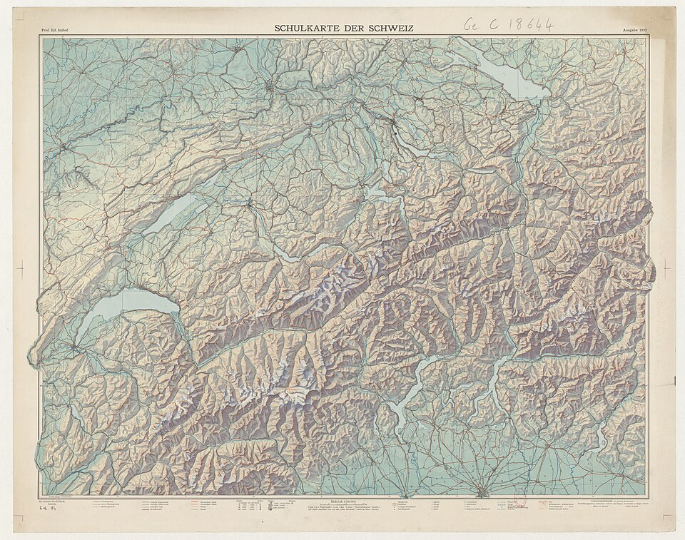
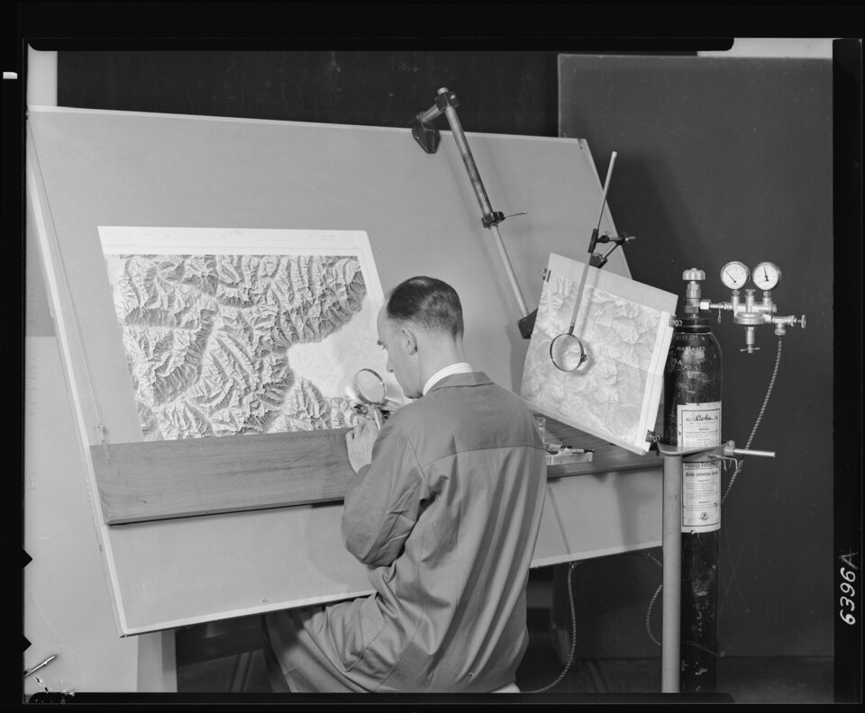
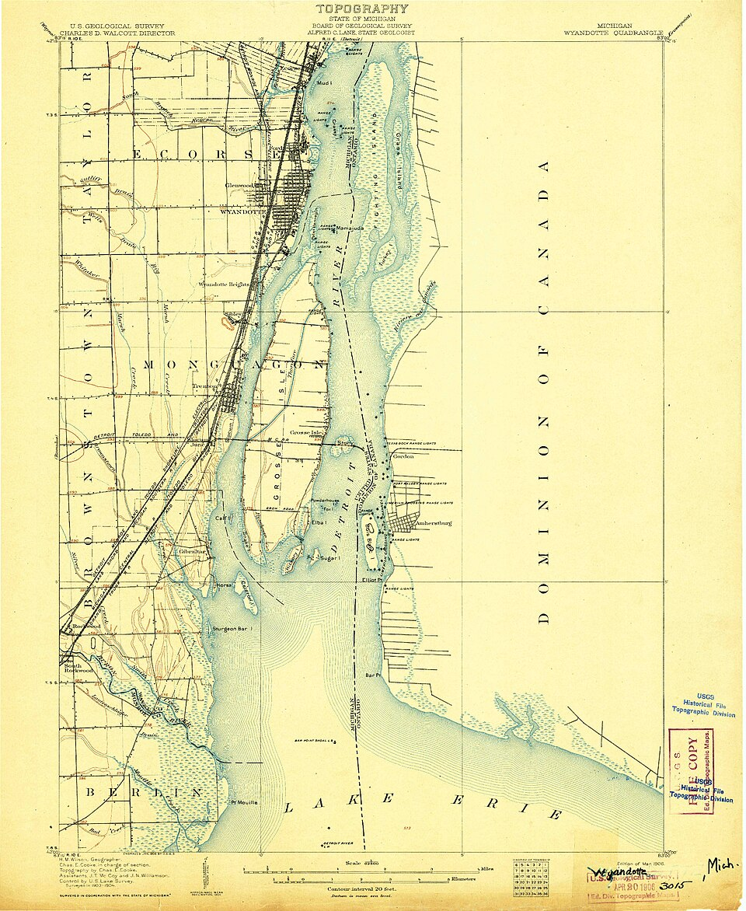
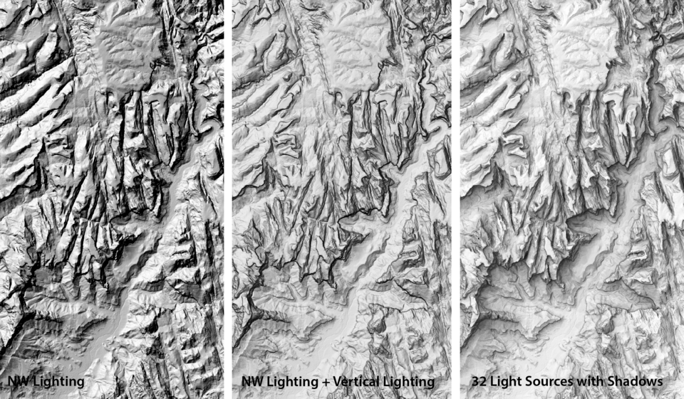

Carthage 1895: the title set in widely spaced engraved capitals, a dotted coastline, hairline graticule ticks in the margin. Borrowed: dotted shoreline and margin ticks.

Imhof's school map: lit slopes warm, shadows cool blue-grey (aerial perspective). Borrowed: shadow tone #8E9AA8 in hillshade, never grey.

A swisstopo cartographer painting the relief by hand on a tilted desk. Borrowed: the north-west light at 315° and the idea of the map as a made object.

USGS quad: brown index contours with their value set in the line, blue water lining along the shore. Borrowed: water lining (3 parallel lines along the coast) and labels set inside contour gaps.

Same terrain lit three ways (NW, NW + vertical, 32 lights). Borrowed: multi-directional hillshade so no slope goes black.